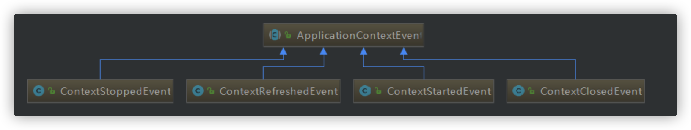
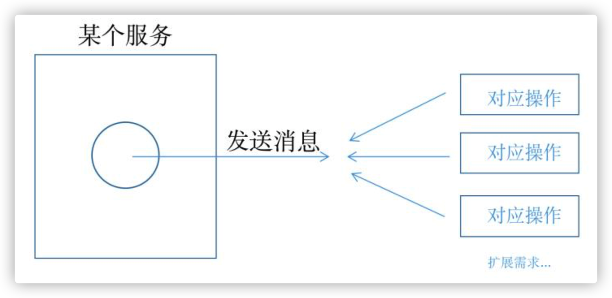
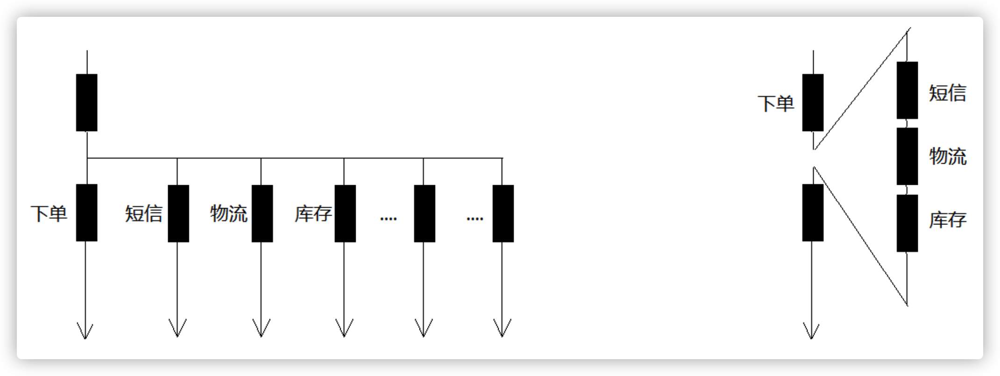
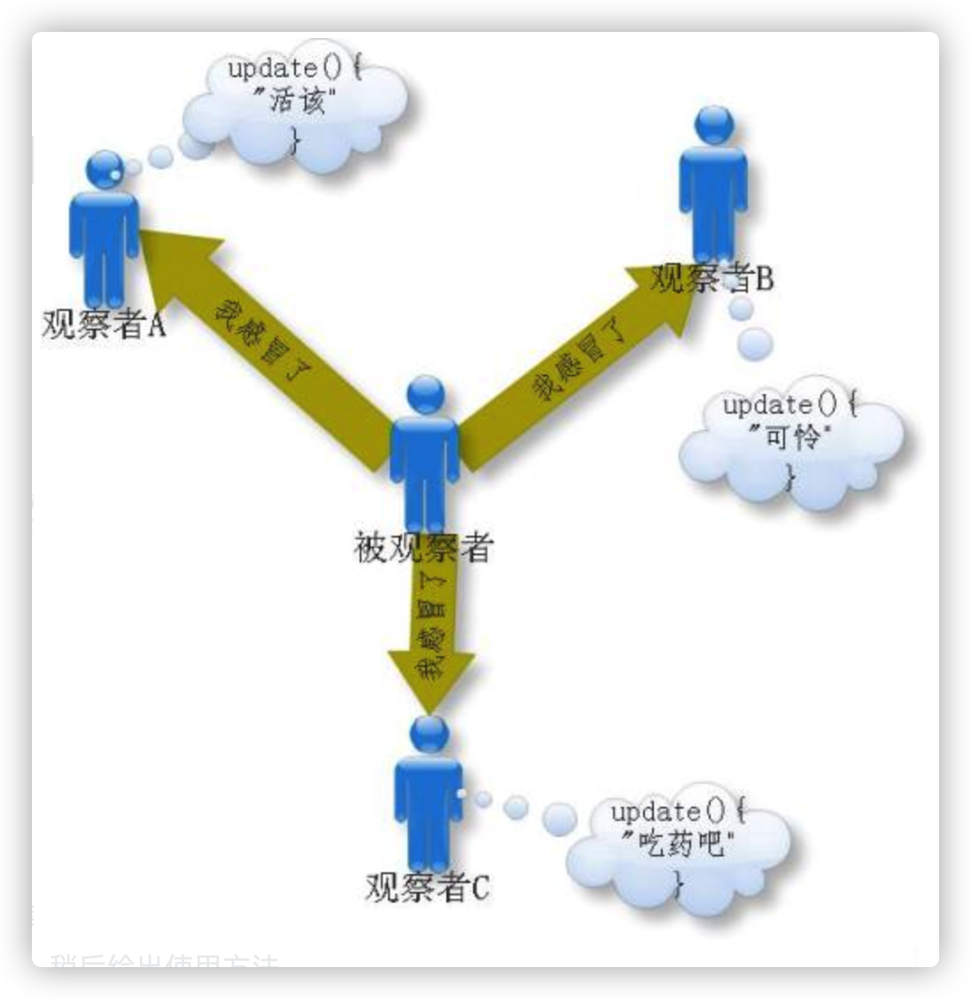
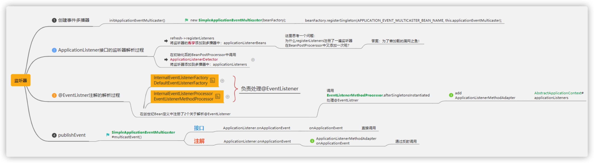

Spring事件监听机制
1. 使用Spring 事件
Spring事件体系包括三个组件：事件，事件监听器，事件广播器。
1.1 事件
Spring内置事件
内置事件中由系统内部进行发布，只需注入监听器

| Event | 说明 |
|---|---|
| ContextRefreshedEvent | 当容器被实例化或 refreshed 时发布.如调用 refresh() 方法, 此处的实例化是指所有的 bean 都已被加载,后置处理器都被激活,所有单例 bean 都已被实例化, 所有的容器对象都已准备好可使用. 如果容器支持热重载,则 refresh 可以被触发多次（XmlWebApplicatonContext 支持热刷新，而 GenericApplicationContext 则不支持） |
| ContextStartedEvent | 当容器启动时发布,即调用 start() 方法，已启用意味着所有的 Lifecycle bean 都已显式接收到了 start 信号 |
| ContextStoppedEvent | 当容器停止时发布,即调用 stop() 方法，即所有的 Lifecycle bean 都已显式接收到了 stop 信号，关闭的容器可以通过 start() 方法重启 |
| ContextClosedEvent | 当容器关闭时发布,即调用 close 方法，关闭意味着所有的单例bean都已被销毁。关闭的容器不能被重启或 refresh |
| RequestHandledEvent | 这只在使用 spring 的 DispatcherServlet 时有效，当一个请求被处理完成时发布 |
自定义事件
事件类需要继承 ApplicationEvent，代码如下：
/**
* 事件
*/
public class BigEvent extends ApplicationEvent {
private String name;
public BigEvent(Object source, String name) {
super(source);
this.name = name;
}
public String getName() {
return name;
}
}
这里为了简单测试，所以写的很简单。
事件类是一种很简单的pojo，除了需要继承 ApplicationEvent 也没什么了，这个类有一个构造方法需要 super。
1.2 事件监听器
事件监听器-基于接口
@Component
public class HelloEventListener implements ApplicationListener<OrderEvent> {
@Override
public void onApplicationEvent(OrderEvent event) {
if(event.getName().equals("减库存")){
System.out.println("减库存.......");
}
}
}
事件监听器需要实现 ApplicationListener 接口，这是个泛型接口，泛型类类型就是事件类型，其次需要是 spring 容器托管的 bean，所以这里加了 @component，只有一个方法，就是 onApplicationEvent。
事件监听器-基于注解
@Component
public class OrderEventListener {
@EventListener(OrderEvent.class)
public void onApplicationEvent(OrderEvent event) {
if(event.getName().equals("减库存")){
System.out.println("减库存.......");
}
}
}
1.3 事件发布操作
事件发布方式很简单
applicationContext.publishEvent(new HelloEvent(this,"lgb"));
然后调用方法就能看到
2020-9-22 19:08:00.052 INFO 284928 --- [nio-5577-exec-3] l.b.e.c.s.event.HelloEventListener : receive lgb say hello!

疑问
- 同样的事件能有多个监听器 -- 可以的
- 事件监听器一定要写一个类去实现吗？其实是可以不需要的，spring 有个注解 @EventListener，修饰在方法上，稍后给出使用方法
- 事件监听操作和发布事件的操作是同步的吗？是的，所以如果有事务，监听操作也在事务内
- 可以作为异步处理吗？可以，看源码有解释：
@Bean(name = "applicationEventMulticaster")
public ApplicationEventMulticaster simpleApplicationEventMulticaster() {
SimpleApplicationEventMulticaster eventMulticaster
= new SimpleApplicationEventMulticaster();
eventMulticaster.setTaskExecutor(new SimpleAsyncTaskExecutor());
return eventMulticaster;
}

2. Spring事件原理
原理：观察者模式
spring的事件监听有三个部分组成：
- 事件（ApplicationEvent）负责对应相应监听器，事件源发生某事件是特定事件监听器被触发的原因。
- 监听器（ApplicationListener）对应于观察者模式中的观察者。监听器监听特定事件，并在内部定义了事件发生后的响应逻辑。
- 事件发布器（ApplicationEventMulticaster）对应于观察者模式中的被观察者/主题， 负责通知观察者对外提供发布事件和增删事件监听器的接口，维护事件和事件监听器之间的映射关系，并在事件发生时负责通知相关监听器。

Spring事件机制是观察者模式的一种实现，但是除了发布者和监听者者两个角色之外，还有一个 EventMultiCaster 的角色负责把事件转发给监听者，工作流程如下：
也就是说上面代码中发布者调用 applicationEventPublisher.publishEvent(msg); 是会将事件发送给了 EventMultiCaster， 而后由 EventMultiCaster 注册着所有的 Listener，然后根据事件类型决定转发给那个 Listener。
源码流程：

Spring在ApplicationContext 接口的抽象实现类 AbstractApplicationContext 中完成了事件体系的搭建。
AbstractApplicationContext 拥有一个 applicationEventMulticaster 成员变量，applicationEventMulticaster 提供了容器监听器的注册表。
AbstractApplicationContext在refresh() 这个容器启动方法中搭建了事件的基础设施，其中 AbstractApplicationContext的refresh 方法实现如下：
@Override
public void refresh() throws BeansException, IllegalStateException {
synchronized (this.startupShutdownMonitor) {
// Prepare this context for refreshing.
prepareRefresh();
// Tell the subclass to refresh the internal bean factory.
ConfigurableListableBeanFactory beanFactory = obtainFreshBeanFactory();
// Prepare the bean factory for use in this context.
prepareBeanFactory(beanFactory);
try {
// Allows post-processing of the bean factory in context subclasses.
postProcessBeanFactory(beanFactory);
// Invoke factory processors registered as beans in the context.
invokeBeanFactoryPostProcessors(beanFactory);
// Register bean processors that intercept bean creation.
registerBeanPostProcessors(beanFactory);
// Initialize message source for this context.
initMessageSource();
// Initialize event multicaster for this context.
initApplicationEventMulticaster();
// Initialize other special beans in specific context subclasses.
onRefresh();
// Check for listener beans and register them.
registerListeners();
// Instantiate all remaining (non-lazy-init) singletons.
finishBeanFactoryInitialization(beanFactory);
// Last step: publish corresponding event.
finishRefresh();
}
catch (BeansException ex) {
if (logger.isWarnEnabled()) {
logger.warn("Exception encountered during context initialization - " +
"cancelling refresh attempt: " + ex);
}
// Destroy already created singletons to avoid dangling resources.
destroyBeans();
// Reset 'active' flag.
cancelRefresh(ex);
// Propagate exception to caller.
throw ex;
}
finally {
// Reset common introspection caches in Spring's core, since we
// might not ever need metadata for singleton beans anymore...
resetCommonCaches();
}
}
}
2.1 事件广播器的初始化
/**
* Initialize the ApplicationEventMulticaster.
* Uses SimpleApplicationEventMulticaster if none defined in the context.
* @see org.springframework.context.event.SimpleApplicationEventMulticaster
*/
protected void initApplicationEventMulticaster() {
ConfigurableListableBeanFactory beanFactory = getBeanFactory();
if (beanFactory.containsLocalBean(APPLICATION_EVENT_MULTICASTER_BEAN_NAME)) {
this.applicationEventMulticaster =
beanFactory.getBean(APPLICATION_EVENT_MULTICASTER_BEAN_NAME, ApplicationEventMulticaster.class);
if (logger.isDebugEnabled()) {
logger.debug("Using ApplicationEventMulticaster [" + this.applicationEventMulticaster + "]");
}
}
else {
this.applicationEventMulticaster = new SimpleApplicationEventMulticaster(beanFactory);
beanFactory.registerSingleton(APPLICATION_EVENT_MULTICASTER_BEAN_NAME, this.applicationEventMulticaster);
if (logger.isDebugEnabled()) {
logger.debug("Unable to locate ApplicationEventMulticaster with name '" +
APPLICATION_EVENT_MULTICASTER_BEAN_NAME +
"': using default [" + this.applicationEventMulticaster + "]");
}
}
}
用户可以在配置文件中为容器定义一个自定义的事件广播器，只要实现 ApplicationEventMulticaster 就可以了，Spring 会通过 反射的机制将其注册成容器的事件广播器，如果没有找到配置的外部事件广播器，Spring 自动使用 SimpleApplicationEventMulticaster 作为事件广播器。
2.2 注册事件监听器
/**
* Add beans that implement ApplicationListener as listeners.
* Doesn't affect other listeners, which can be added without being beans.
*/
protected void registerListeners() {
// Register statically specified listeners first.
for (ApplicationListener<?> listener : getApplicationListeners()) {
getApplicationEventMulticaster().addApplicationListener(listener);
}
// Do not initialize FactoryBeans here: We need to leave all regular beans
// uninitialized to let post-processors apply to them!
String[] listenerBeanNames = getBeanNamesForType(ApplicationListener.class, true, false);
for (String listenerBeanName : listenerBeanNames) {
getApplicationEventMulticaster().addApplicationListenerBean(listenerBeanName);
}
// Publish early application events now that we finally have a multicaster...
Set<ApplicationEvent> earlyEventsToProcess = this.earlyApplicationEvents;
this.earlyApplicationEvents = null;
if (earlyEventsToProcess != null) {
for (ApplicationEvent earlyEvent : earlyEventsToProcess) {
getApplicationEventMulticaster().multicastEvent(earlyEvent);
}
}
}
Spring 根据反射机制，使用 ListableBeanFactory的getBeansOfType 方法，从 BeanDefinitionRegistry 中找出所有实现 org.springframework.context.ApplicationListener的Bean，将它们注册为容器的事件监听器，实际的操作就是将其添加到事件广播器所提供的监听器注册表中。
2.3 发布事件
跟着 finishRefresh(); 方法进入 publishEvent(new ContextRefreshedEvent(this)); 方法如下：
/**
* Publish the given event to all listeners.
* @param event the event to publish (may be an {@link ApplicationEvent}
* or a payload object to be turned into a {@link PayloadApplicationEvent})
* @param eventType the resolved event type, if known
* @since 4.2
*/
protected void publishEvent(Object event, ResolvableType eventType) {
Assert.notNull(event, "Event must not be null");
if (logger.isTraceEnabled()) {
logger.trace("Publishing event in " + getDisplayName() + ": " + event);
}
// Decorate event as an ApplicationEvent if necessary
ApplicationEvent applicationEvent;
if (event instanceof ApplicationEvent) {
applicationEvent = (ApplicationEvent) event;
}
else {
applicationEvent = new PayloadApplicationEvent<Object>(this, event);
if (eventType == null) {
eventType = ((PayloadApplicationEvent)applicationEvent).getResolvableType();
}
}
// Multicast right now if possible - or lazily once the multicaster is initialized
if (this.earlyApplicationEvents != null) {
this.earlyApplicationEvents.add(applicationEvent);
}
else {
getApplicationEventMulticaster().multicastEvent(applicationEvent, eventType);
}
// Publish event via parent context as well...
if (this.parent != null) {
if (this.parent instanceof AbstractApplicationContext) {
((AbstractApplicationContext) this.parent).publishEvent(event, eventType);
}
else {
this.parent.publishEvent(event);
}
}
}
在 AbstractApplicationContext的publishEvent 方法中， Spring 委托 ApplicationEventMulticaster 将事件通知给所有的事件监听器.
2.4 Spring默认的事件广播器SimpleApplicationEventMulticaster
@Override
public void multicastEvent(final ApplicationEvent event, ResolvableType eventType) {
ResolvableType type = (eventType != null ? eventType : resolveDefaultEventType(event));
for (final ApplicationListener<?> listener : getApplicationListeners(event, type)) {
Executor executor = getTaskExecutor();
if (executor != null) {
executor.execute(new Runnable() {
@Override
public void run() {
invokeListener(listener, event);
}
});
}
else {
invokeListener(listener, event);
}
}
}
/**
* Invoke the given listener with the given event.
* @param listener the ApplicationListener to invoke
* @param event the current event to propagate
* @since 4.1
*/
@SuppressWarnings({"unchecked", "rawtypes"})
protected void invokeListener(ApplicationListener listener, ApplicationEvent event) {
ErrorHandler errorHandler = getErrorHandler();
if (errorHandler != null) {
try {
listener.onApplicationEvent(event);
}
catch (Throwable err) {
errorHandler.handleError(err);
}
}
else {
try {
listener.onApplicationEvent(event);
}
catch (ClassCastException ex) {
// Possibly a lambda-defined listener which we could not resolve the generic event type for
LogFactory.getLog(getClass()).debug("Non-matching event type for listener: " + listener, ex);
}
}
}
遍历注册的每个监听器，并启动来调用每个监听器的 onApplicationEvent 方法。由于 SimpleApplicationEventMulticaster的taskExecutor 的实现类是 SyncTaskExecutor，因此，事件监听器对事件的处理，是同步进行的。
从代码可以看出，applicationContext.publishEvent() 方法，需要同步等待各个监听器处理完之后，才返回。
也就是说，Spring 提供的事件机制，默认是同步的。如果想用异步的，可以自己实现 ApplicationEventMulticaster 接口，并在 Spring 容器中注册 id 为 applicationEventMulticaster的Bean。例如下面所示:
public class AsyncApplicationEventMulticaster extends AbstractApplicationEventMulticaster {
private TaskExecutor taskExecutor = new SimpleAsyncTaskExecutor();
public void setTaskExecutor(TaskExecutor taskExecutor) {
this.taskExecutor = (taskExecutor != null ? taskExecutor : new SimpleAsyncTaskExecutor());
}
protected TaskExecutor getTaskExecutor() {
return this.taskExecutor;
}
@SuppressWarnings("unchecked")
public void multicastEvent(final ApplicationEvent event) {
for (Iterator<ApplicationListener> it = getApplicationListeners().iterator(); it.hasNext();) {
final ApplicationListener listener = it.next();
getTaskExecutor().execute(new Runnable() {
public void run() {
listener.onApplicationEvent(event);
}
});
}
}
}
spring配置：
@Bean(name = "applicationEventMulticaster")
public ApplicationEventMulticaster simpleApplicationEventMulticaster() {
SimpleApplicationEventMulticaster eventMulticaster
= new SimpleApplicationEventMulticaster();
//ThreadPoolTaskExecutor
eventMulticaster.setTaskExecutor(new SimpleAsyncTaskExecutor());
return eventMulticaster;
}
Spring 发布事件之后，所有注册的事件监听器，都会收到该事件，因此，事件监听器在处理事件时，需要先判断该事件是否是自己关心的。
Sping 事件体系所使用的设计模式是：观察者模式。ApplicationListener 是观察者接口，接口中定义了 onApplicationEvent 方法，该方法的作用是对 ApplicationEvent 事件进行处理。
问题：
Spring 是怎样避免读取到不完整 Bean 的？
怎么样可以在所有 Bean 创建完后做扩展代码？
请介绍下 Spring 事件监听器的原理。